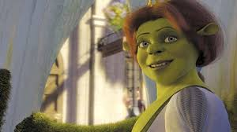

Sinopse
Quando o Rei Harold adoece e morre, Shrek é o herdeiro aparente ao trono de Tão Tão Distante. No entanto, ele não quer ser rei — tudo o que deseja é voltar para seu pântano com Fiona. Para evitar assumir o trono, Shrek parte em uma missão ao lado de Burro e Gato de Botas para encontrar o primo de Fiona, Arturo (Artie), o único outro herdeiro elegível. Enquanto isso, o Príncipe Encantado, determinado a se vingar e assumir o controle do reino, organiza uma revolta dos vilões. Fiona e outras princesas precisam unir forças para defender o castelo até a volta de Shrek.
Produção
Aron Warner – também produtor dos filmes anteriores da franquia. Andrew Adamson – atuou como produtor executivo; também co-dirigiu os dois primeiros filmes. John H. Williams – produtor da franquia "Shrek". David Lipman – produtor principal de "Shrek Terceiro". O filme foi produzido pela DreamWorks Animation e distribuído pela Paramount Pictures.


Curiosidades
Personagens de contos de fadas:
O filme apresenta 23 personagens inspirados em contos de fadas,
incluindo Gato de Botas, Três Porquinhos, Lobo Mau, Pinóquio, Cinderela, Rapunzel e Chapeuzinho
Vermelho.
Trilha sonora:
A banda Smash Mouth participa da trilha sonora da animação.
Recepção e Crítica
Sucesso de bilheteira:
O filme arrecadou US$ 808,3 milhões mundialmente, tornando-se o filme de animação mais lucrativo de
2007.
Crítica mista:
Embora tenha sido um sucesso comercial, a crítica foi mista. Alguns elogiaram a animação e o humor,
enquanto outros sentiram que o filme não atingiu o mesmo nível dos anteriores.
Inovações tecnológicas:
O filme utilizou avanços significativos em CGI, permitindo expressões faciais mais detalhadas e
cenas
com até 2.500 personagens distintos.

Personagens de Shrek 3
| Nome | Descrição | Imagem |
|---|---|---|
| Shrek | O ogro verde, herói da história, tentando evitar virar rei. | |
| Fiona | Princesa e esposa de Shrek, forte e determinada. |  |
| Burro | Melhor amigo falante de Shrek, engraçado e leal. | |
| Gato de Botas | Espadachim felino com charme e olhos irresistíveis. | |
| Arthur Pendragon (Artie) | Adolescente inseguro, herdeiro do trono de Tão Tão Distante. Representa o crescimento e a responsabilidade. | |
| Merlin | Professor excêntrico de magia, meio maluco, mas ajuda os heróis com seus feitiços instáveis. |  |
| Príncipe Encantado | Vilão do filme. Quer tomar o trono de Tão Tão Distante e se vingar da morte da Fada Madrinha. |